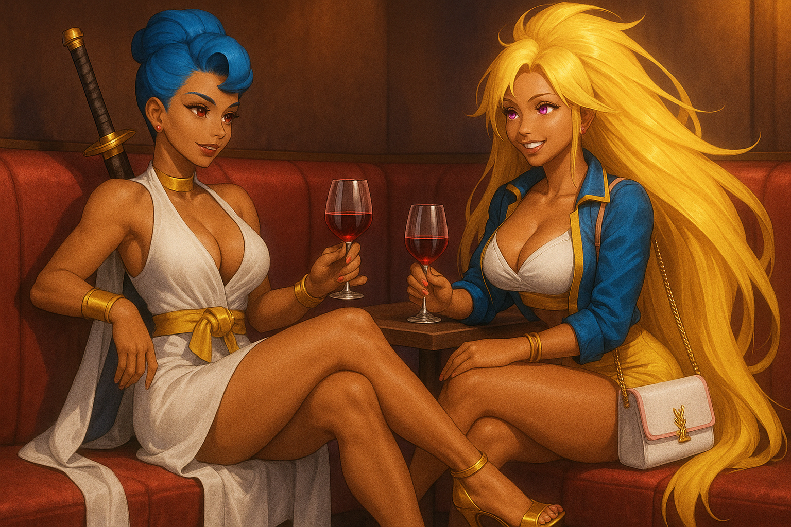

Rivals and Allies

Overview
Rivals and Allies is a dedicated page to showcase fan-submitted OCs who have become either recurring enemies or recurring supporters in the universe. These characters enrich the lore by adding new dynamics, rivalries, and unexpected partnerships.
Featured Rivals/Allies (Already established in Videos)
- * Drakor – A powerful rival who doubles as the leader of the Night Shifters (Which Victoria Black is a member of) and triples as a defensive warrior, shielding Victoria from dishonor. Clashes with Victoria and her family shape many battles.
- * MIRA - A Strong lady Half-Saiyan Half-goddess Half-Demon, Who Allies with Victoria Black, contrasting Black's finness, glamoured and distant ki manipulation fight style with her powerful, close range, brawler fighting style.
- [Masami] – Description.
- Harry Flynn -
Community Rivals/ Allies (Those Strong Fighters who want to be Added)
- [Name of Ally OC] – Short description of their abilities, motivations, and how they support the main cast.
- [Name of Ally OC] – Description.
Submission Guidelines
Fans can submit their OCs through the community channels. Characters selected for this page must have appeared more than once in videos, or collaborations to be considered “recurring.”
See Also
Need help creating your OC page? → Use the OC Template